3 Production Process Characterization
3.1 Pacakges used in this chapter
3.2 Case Studies
3.2.1 Furnace Case Study
3.2.1.1 Background and Data
Introduction In a semiconductor manufacturing process flow, we have a step whereby we grow an oxide film on the silicon wafer using a furnace. In this step, a cassette of wafers is placed in a quartz “boat” and the boats are placed in the furnace. The furnace can hold four boats. A gas flow is created in the furnace and it is brought up to temperature and held there for a specified period of time (which corresponds to the desired oxide thickness). This study was conducted to determine if the process was stable and to characterize sources of variation so that a process control strategy could be developed.
The goal of this study is to determine if this process is capable of consistently growing oxide films with a thickness of 560 Angstroms +/- 100 Angstroms. An additional goal is to determine important sources of variation for use in the development of a process control strategy.
## Parsed with column specification:
## cols(
## X1 = col_integer(),
## X2 = col_integer(),
## X3 = col_integer(),
## X4 = col_integer()
## )3.2.1.2 Histogram and normal probability plots of all data
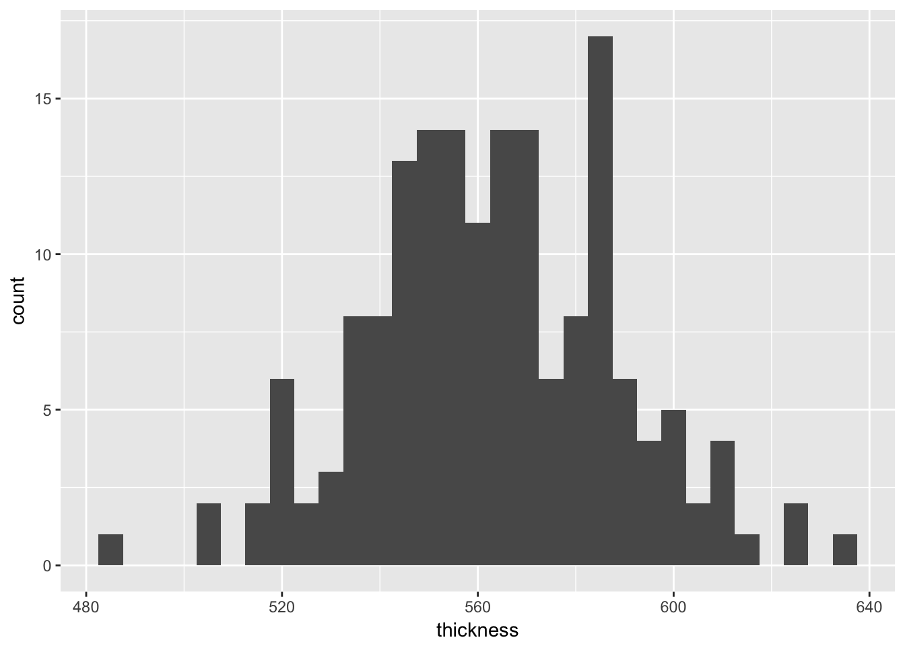
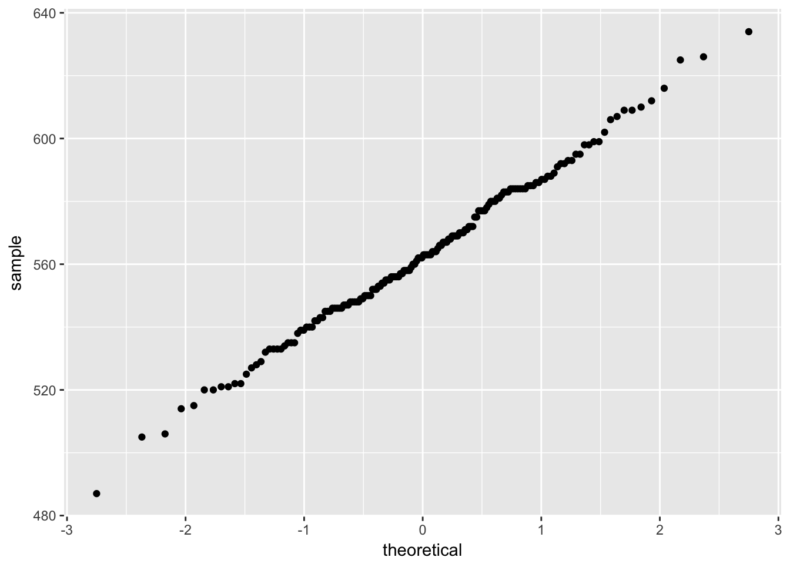
3.2.1.3 Summary statistics and standard deviation of film thickness
## Min. 1st Qu. Median Mean 3rd Qu. Max.
## 487.0 546.8 562.5 563.0 582.2 634.0## [1] 25.38468The NIST/SEMATECH e-Handbook ask for a capability analysis; however, this is covered in Chapter 6
3.2.1.4 Sources of variation
3.2.1.4.1 Boxplot by run
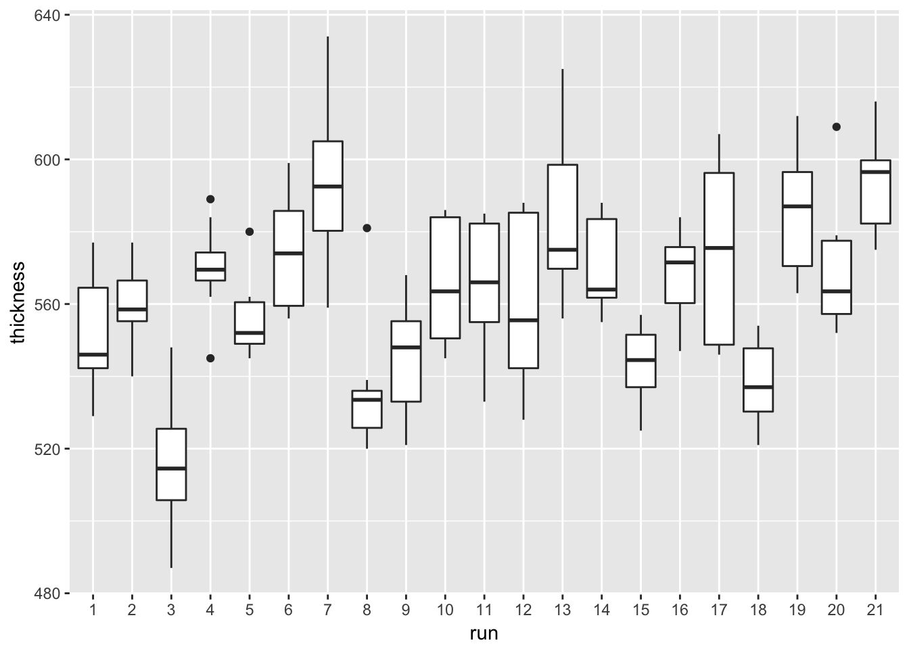
3.2.1.4.2 Boxplot by zone
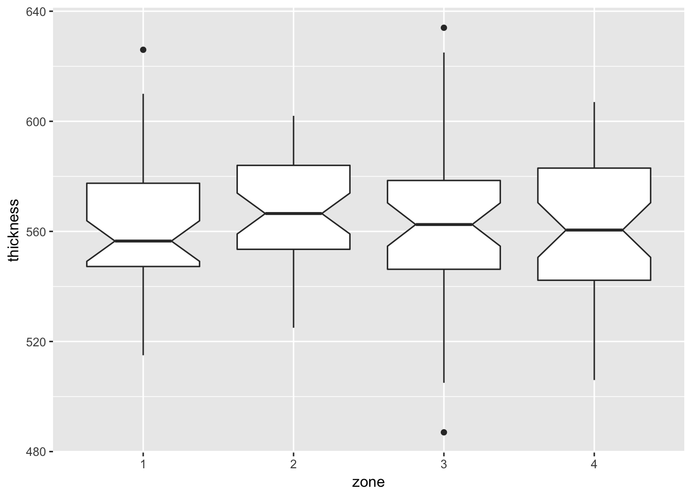
Notch if FALSE (default) make a standard box plot. If TRUE, make a notched box plot. Notches are used to compare groups; if the notches of two boxes do not overlap, this suggests that the medians are significantly different.
3.2.1.4.3 Boxplots by wafer
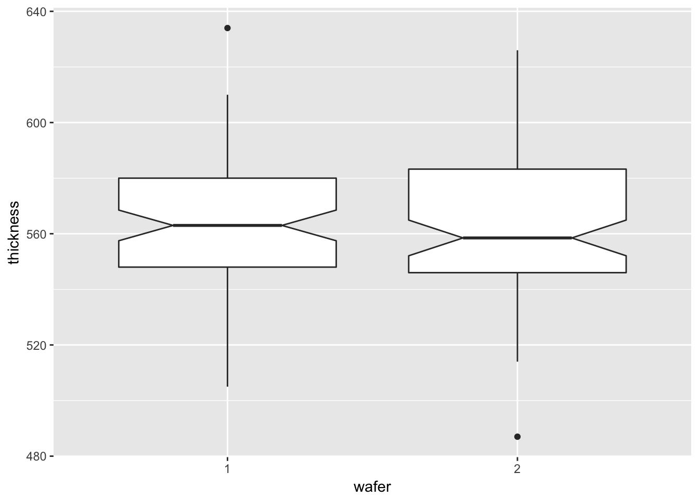
3.2.1.4.4 One-way ANOVA to confirm thickness is different by run
## Df Sum Sq Mean Sq F value Pr(>F)
## run 20 61442 3072.1 9.781 <2e-16 ***
## Residuals 147 46170 314.1
## ---
## Signif. codes: 0 '***' 0.001 '**' 0.01 '*' 0.05 '.' 0.1 ' ' 13.2.1.4.5 One-way ANOVA to confirm thickness is not different by zone
## Df Sum Sq Mean Sq F value Pr(>F)
## zone 3 913 304.2 0.468 0.705
## Residuals 164 106699 650.63.2.1.4.6 Nested ANOVA
aov.thickness.nested <- aov(thickness ~ run + run:zone, data = furnace)
summary(aov.thickness.nested)## Df Sum Sq Mean Sq F value Pr(>F)
## run 20 61442 3072.1 25.412 < 2e-16 ***
## run:zone 63 36014 571.7 4.729 3.85e-11 ***
## Residuals 84 10155 120.9
## ---
## Signif. codes: 0 '***' 0.001 '**' 0.01 '*' 0.05 '.' 0.1 ' ' 13.2.1.4.7 Observed trend by week
furnace_group <- furnace %>%
mutate(run = as.integer(run)) %>%
mutate(grouping = case_when(run <= 7 ~ "Week 1",
run > 7 & run <= 14 ~ "Week 2",
run > 14 ~ "Week 3")) %>%
mutate(counting = 1:n()) %>%
# mutate(counting = as.double(counting)) %>%
mutate(count_by_group = case_when(counting <= 56 ~ counting,
counting > 56 & counting <= 112 ~ counting - 56L,
counting > 112 ~ counting - 112L))ggplot(furnace_group) +
geom_line(aes(x = count_by_group, y = thickness, group = grouping, colour = grouping)) +
geom_smooth(aes(x = count_by_group, y = thickness, group = grouping, colour = grouping),
method = "lm", se = FALSE) +
theme_classic() +
theme(legend.title=element_blank()) +
labs(x = "run count by group", y = "film thickness")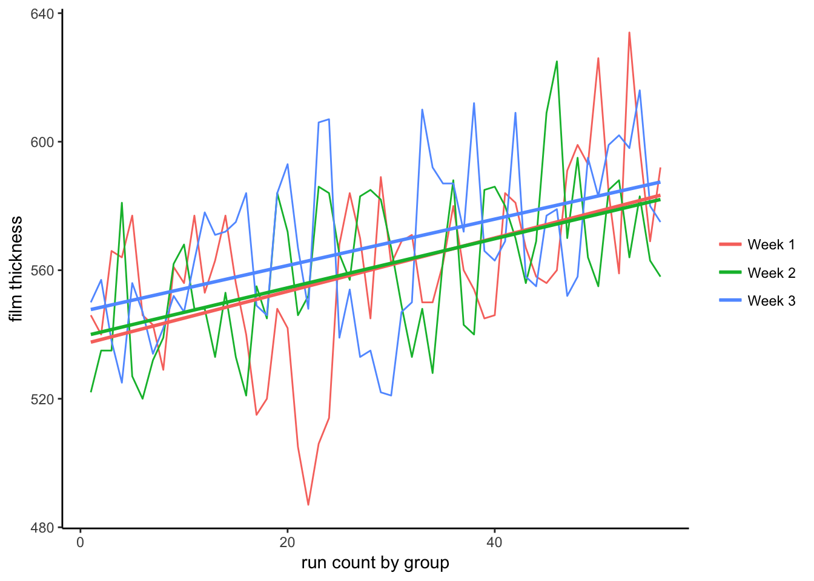
3.2.2 Machine Case Study
3.2.2.1 Background and Data
Background and Data Introduction A machine shop has three automatic screw machines that produce various parts. The shop has enough capital to replace one of the machines. The quality control department has been asked to conduct a study and make a recommendation as to which machine should be replaced. It was decided to monitor one of the most commonly produced parts (an 1/8th inch diameter pin) on each of the machines and see which machine is the least stable.
Goal The goal of this study is to determine which machine is least stable in manufacturing a steel pin with a diameter of .125 +/- .003 inches. Stability will be measured in terms of a constant variance about a constant mean. If all machines are stable, the decision will be based on process variability and throughput. Namely, the machine with the highest variability and lowest throughput will be selected for replacement.
## Parsed with column specification:
## cols(
## X1 = col_integer(),
## X2 = col_integer(),
## X3 = col_integer(),
## X4 = col_integer(),
## X5 = col_double()
## )3.2.2.2 Histogram and normal probability plots of all data
ggplot(machine, mapping = aes(x = diameter, fill = machine)) +
geom_histogram(binwidth = 0.0005, alpha = 0.5) +
facet_grid(machine ~ .)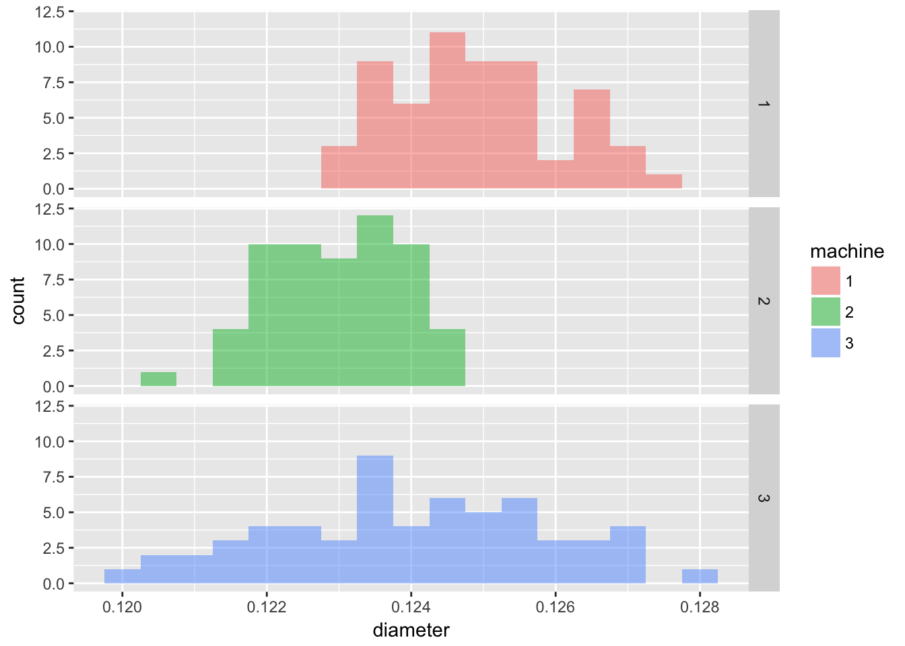
Since we are given the target diamter and tolerance, we can include these on the plot.
ggplot(machine, mapping = aes(x = diameter, fill = machine)) +
geom_histogram(binwidth = 0.0005, alpha = 0.5) +
geom_vline(aes(xintercept = 0.125)) +
geom_vline(aes(xintercept = 0.128), linetype = 2) +
geom_vline(aes(xintercept = 0.122), linetype = 2) +
facet_grid(machine ~ .)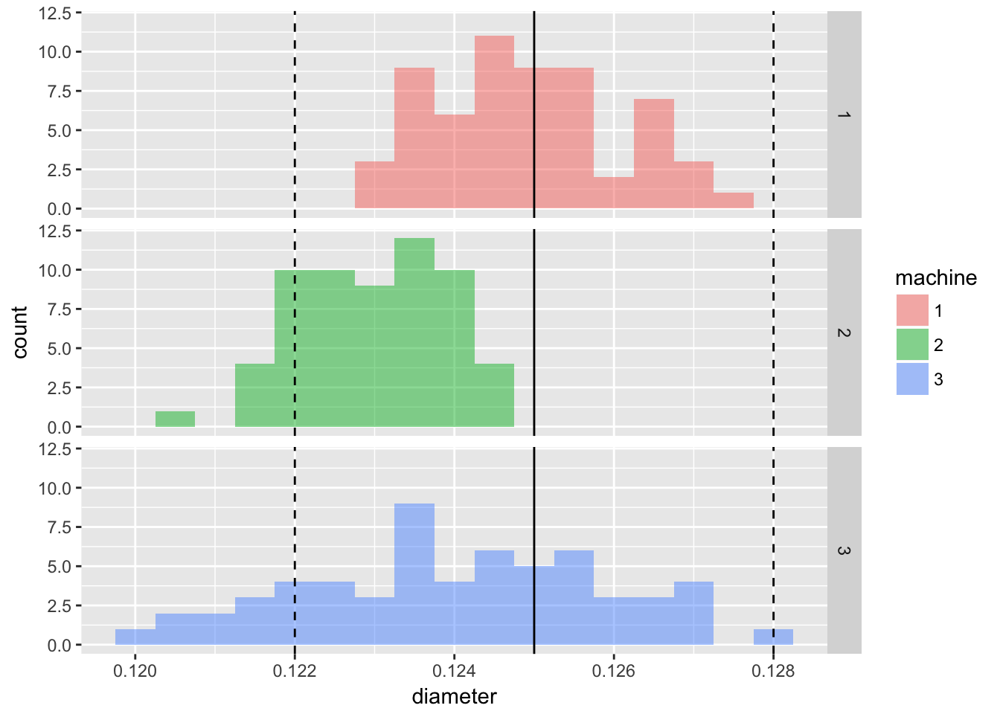
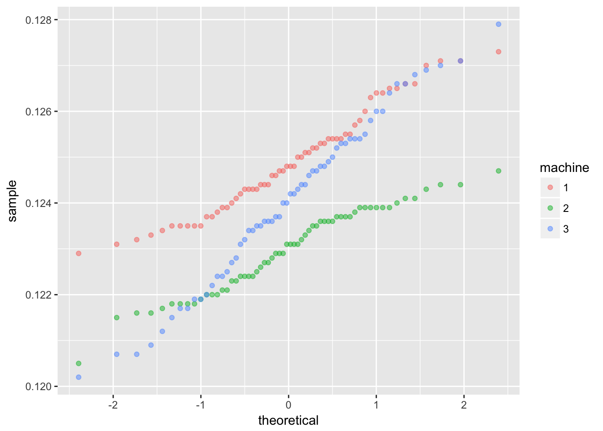
3.2.2.3 Sources of variation
3.2.2.3.1 Boxplots by factors
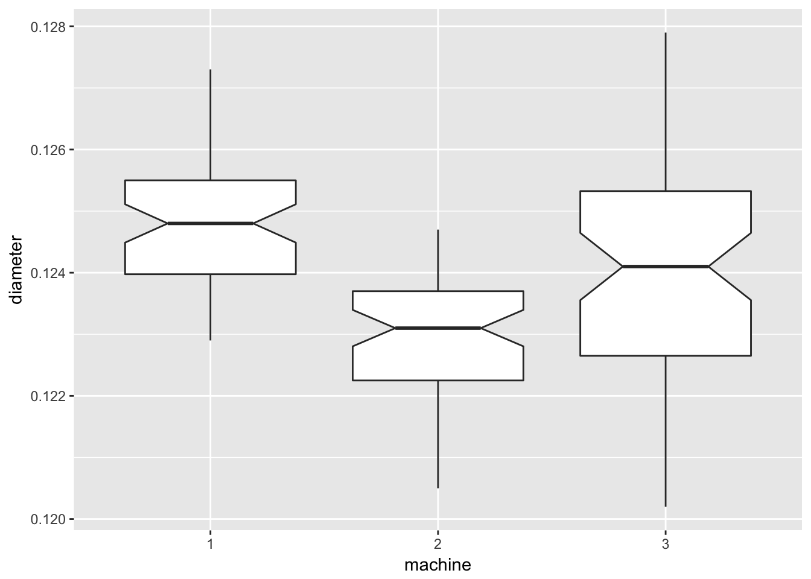
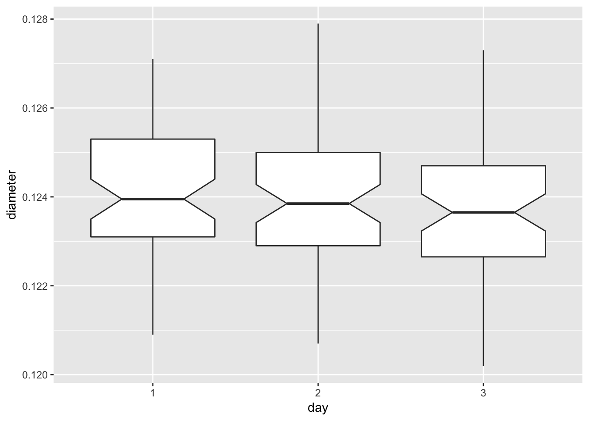
ggplot(data = machine, mapping = aes(x = time, y = diameter)) +
geom_boxplot(notch = TRUE) +
labs(x = "1 = AM, 2 = PM")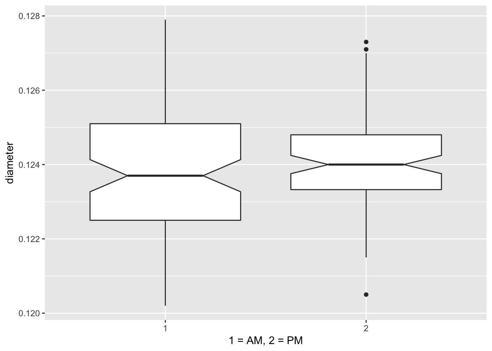
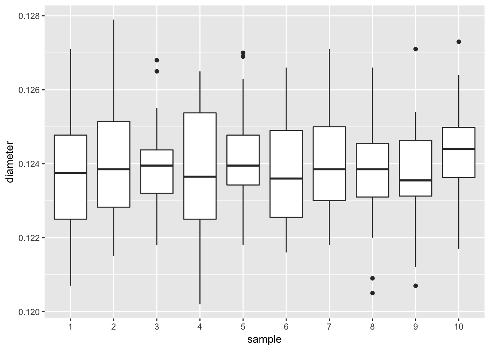
3.2.2.3.2 ANOVA to confirm diameter by machine is different
## Df Sum Sq Mean Sq F value Pr(>F)
## machine 2 1.107e-04 5.538e-05 29.316 1.28e-11 ***
## day 2 3.730e-06 1.870e-06 0.988 0.374
## time 1 2.360e-06 2.360e-06 1.248 0.266
## sample 9 8.850e-06 9.800e-07 0.521 0.858
## Residuals 165 3.117e-04 1.890e-06
## ---
## Signif. codes: 0 '***' 0.001 '**' 0.01 '*' 0.05 '.' 0.1 ' ' 1## Df Sum Sq Mean Sq F value Pr(>F)
## machine 2 0.0001108 5.538e-05 30.01 5.99e-12 ***
## Residuals 177 0.0003266 1.850e-06
## ---
## Signif. codes: 0 '***' 0.001 '**' 0.01 '*' 0.05 '.' 0.1 ' ' 1